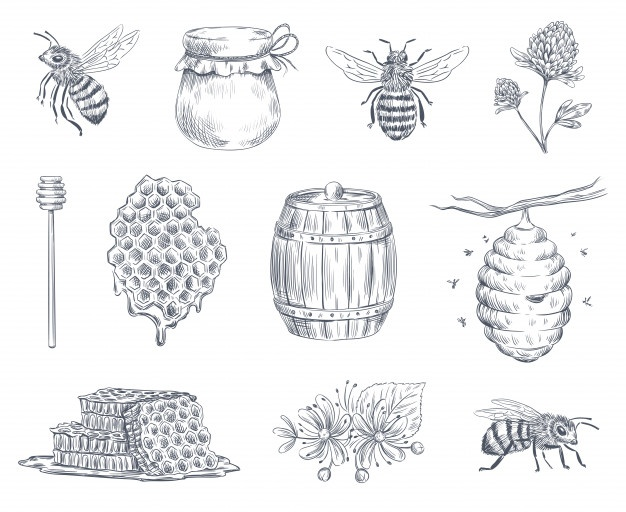

Albinele sunt insecte zburatoare, clasificate în cadrul superfamiliei Apoidea din cadrul subordinului Apocrita, care se hranesc cu nectarul florilor, ca sursa de energie gratie continutului de zaharuri, si cu polen, ca sursa de proteine, folosit mai mult la hranirea larvelor, activitate ce se soldeaza cu polenizarea florilor si, în unele cazuri, cu producerea mierii si cerii.
